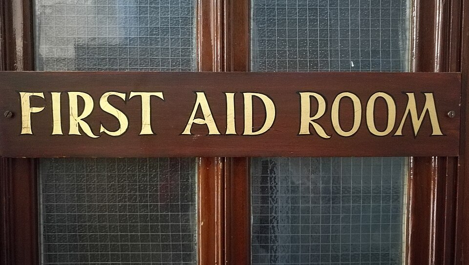

학교 보건실 문 표지(이미지) · 사진: SulaLib / Wikimedia Commons, CC BY-SA 4.0
국제학교 입학 서류 속 건강·예방접종 기록 — 합격보다 먼저 막히는 서류입니다
1. 건강 서류는 "합격 심사"가 아니라 "등록 조건"입니다
먼저 성격부터 구분하셔야 합니다. 성적표·추천서·입학 평가는 합격을 가르는 서류입니다. 반면 건강 서류는 대개 합격 뒤에 등록을 마치기 위한 조건으로 요구됩니다. 그래서 가정에서는 "나중에 내면 되겠지" 하고 미루기 쉽습니다.
문제는 이 서류에 기한이 붙어 있다는 점입니다. 많은 학교가 등록 완료 전까지 또는 첫 등교 전까지 제출을 요구하고, 그 기한을 넘기면 등교가 미뤄지거나 자리가 다음 대기자에게 넘어갈 수 있습니다. 자리를 받아 놓고 마음을 놓는 바로 그 시점에 기한이 다가옵니다(→ 재등록·자리 유지).
건강 서류에 보통 들어가는 항목은 이렇습니다.
· 예방접종 기록 — 영문 증명서
· 건강 상태 질문지 — 지병·수술 이력·복용 중인 약
· 알레르기 정보 — 음식·약물·환경
· 투약 동의서 — 학교에서 약을 줄 수 있는지, 조건은 무엇인지
· 응급 연락처와 동의 — 보호자가 연락되지 않을 때의 처치 동의
2. 한국 학교와 무엇이 다른가
| 항목 | 한국 학교에서 익숙한 방식 | 국제학교에서 흔한 방식 |
|---|---|---|
| 예방접종 | 학교가 전산으로 확인 | 가정이 영문 증명서를 제출 |
| 제출 시점 | 입학 후 안내에 따라 | 등록·첫 등교 전 기한이 있는 경우가 많음 |
| 약 복용 | 가방에 넣어 보내는 경우가 있음 | 서면 동의 없이는 투약하지 않는 학교가 많음 |
| 알레르기 | 담임에게 구두로 전달 | 성분명으로 문서화, 급식·간식까지 연동 |
| 기록의 쓰임 | 보건실 안에서 끝 | 현장학습·캠프·기숙에서 다시 요구됨 |
| 누가 챙기나 | 학교가 안내하면 따라감 | 가정이 기한을 관리하는 구조 |
마지막 줄이 핵심입니다. 국제학교는 "알려 드렸으니 챙기시는 것은 가정의 몫"이라는 전제로 돌아갑니다. 안내 메일이 한 번 가고, 기한이 지나면 조치가 따릅니다. 재촉 전화를 기다리시면 안 됩니다.
3. 영문 예방접종 증명서 — 순서를 거꾸로 하면 두 번 일합니다
가장 많이 막히는 서류입니다. 한국에서는 질병관리청의 예방접종도우미 누리집에서 국문·영문 증명서를 발급받을 수 있는 것으로 안내되고, 보건소 방문 발급도 가능합니다. 여기까지는 어렵지 않습니다.
문제는 "전산에 등록된 내역만 증명서에 나온다"는 점입니다. 예전에 민간 병원에서 맞은 접종 가운데 전산 등록이 되지 않은 것이 있으면 증명서에서 그냥 빠집니다. 학교에서는 "이 접종 기록이 없다"는 답이 돌아오고, 그때부터 병원을 수소문하게 됩니다. 출국을 앞둔 가정에는 이 왕복이 뼈아픕니다.
그래서 순서를 이렇게 잡으십시오.
· ① 먼저 내역을 확인합니다. 증명서를 뽑기 전에 누리집에서 빠진 접종이 있는지 봅니다.
· ② 빠진 것이 있으면 등록을 요청합니다. 접종한 의료기관이나 보건소에 문의합니다. 이 단계에 시간이 걸립니다.
· ③ 그다음에 영문 증명서를 발급합니다. 여권 영문 이름과 철자가 같은지 확인하세요. 다르면 학교에서 동일인으로 보지 않습니다.
· ④ 학교 양식이 따로 있는지 확인합니다. 학교가 자체 서식에 의사 서명을 받아 오라고 하는 경우가 있습니다. 이때는 증명서만으로 끝나지 않습니다.
⚠️ 나라마다 요구 항목이 다릅니다. 한국에서 기본으로 맞는 접종과 현지 학교가 요구하는 접종 목록이 꼭 같지는 않습니다. 부족한 항목이 있으면 현지에서 추가 접종을 안내받을 수 있습니다. 출국 전에 학교 양식을 먼저 받아 빠진 항목이 있는지부터 비교해 보세요. 발급 절차와 요구 항목은 바뀔 수 있으니 해당 기관과 학교 안내를 직접 확인하시기 바랍니다.
4. 자주 하는 오해 5가지
· ① "합격했으니 서류는 천천히" — 건강 서류에는 별도 기한이 붙습니다. 등교일이 밀릴 수 있습니다.
· ② "아기수첩 사진을 보내면 되겠지" — 손으로 쓴 기록은 받아 주지 않는 학교가 많습니다. 공식 증명서가 기본입니다.
· ③ "해열제는 가방에 넣어 보내면 되겠지" — 학생이 약을 소지하는 것 자체를 금지하는 학교가 있습니다. 보건실에 맡기는 방식이 일반적입니다.
· ④ "알레르기는 담임께 말씀드렸으니" — 구두 전달은 급식·간식·현장학습까지 이어지지 않습니다. 문서로 남겨야 합니다.
· ⑤ "한 번 냈으니 끝" — 현장학습·숙박 캠프·기숙 신청 때 같은 정보를 다시 요구합니다(→ 현장학습·캠프).
5. 보건실이 하는 일과 하지 않는 일
많은 국제학교가 보건실(또는 간호 인력)을 두고 있지만, 한국 학교의 보건실과 역할이 같지는 않습니다. 일반적으로 이런 구분이 있습니다.
· 하는 일 — 다치거나 갑자기 아플 때 응급 처치, 보호자 연락, 필요하면 병원 이송 안내, 동의서가 있는 경우에 한해 맡아 둔 약을 정해진 시간에 주기
· 하지 않는 일 — 보호자 동의나 처방 없이 약을 주는 것, 지속적인 치료, 진단
그래서 등록 단계에서 투약 동의서를 어떻게 작성하느냐가 실제 생활을 좌우합니다. 아이가 꾸준히 먹는 약이 있다면 약 이름(성분명)·용량·복용 시간·처방 의사를 문서로 남기고, 약은 원래 용기 그대로 보건실에 맡기는 것이 보통입니다. 학교마다 규정이 다르니 입학 안내문의 투약 항목을 그대로 따르시고, 애매하면 보건실에 직접 물어보세요. 연락 창구를 고르는 법은 담임·어드바이저 글에 정리해 두었습니다.
6. 가정에서 할 4단계
· ① 합격 통보를 받은 날, 건강 서류 목록부터 뽑습니다. 안내문에서 기한에 동그라미를 치세요. 성적 서류보다 먼저 손대셔야 하는 경우가 많습니다.
· ② 접종 내역을 먼저 확인하고, 빠진 것을 채운 뒤 영문 증명서를 발급합니다. 순서를 거꾸로 하면 두 번 일합니다.
· ③ 알레르기와 복용 약은 "영문 성분명 + 반응 정도 + 응급 시 조치" 세 줄로 정리해 한 파일에 보관합니다. 해마다 다시 쓰지 않아도 됩니다.
· ④ 출국·입학 전에 학교 보건실 담당자 이름과 연락 방법을 적어 둡니다. 첫 학기에 반드시 한 번은 연락할 일이 생깁니다.
마지막으로 공부 쪽 이야기를 한 줄 덧붙이겠습니다. 건강 서류 때문에 등교가 며칠 밀리는 일이 생기면, 그 며칠이 생각보다 길게 남습니다. 국제학교 수업은 누적 구조라서 학기 첫 주에 빠진 내용이 이후 2~3주를 흔듭니다(→ 출결 규정). 서류를 일찍 끝내 두는 것이 결국 첫 학기 성적을 지키는 일이기도 합니다.
정리
건강 서류는 합격을 가르는 서류가 아니라 등록을 끝내기 위한 조건이고, 그래서 가장 늦게 손대다가 가장 자주 막힙니다. 핵심은 세 가지입니다. 접종 내역을 먼저 확인하고 영문 증명서는 마지막에, 알레르기와 약은 성분명으로 문서화, 한 번 내고 끝이 아니라 현장학습·기숙에서 다시 쓰인다는 것입니다. 입학 준비 전체를 어디서부터 잡아야 할지 모르겠다면, 30분 무료 수업으로 아이의 현재 위치부터 확인해 보시기 바랍니다. (요구 서류와 절차는 학교·나라마다 다르고 해마다 바뀌니 학교 안내문과 발급 기관 안내를 직접 확인하세요.)